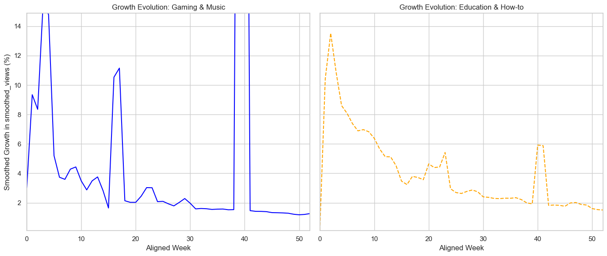
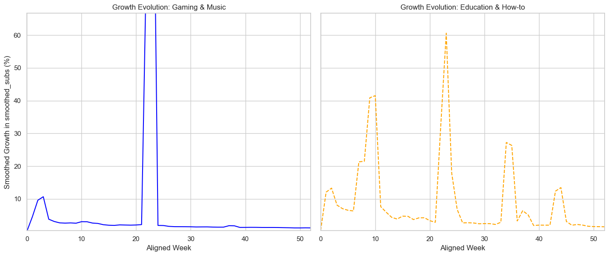

Introduction
Every YouTuber, at some point, faces a big question: should they stick to what they're good at or try something new? With over 2.7 billion users and 500 hours of video uploaded every minute, it's not an easy choice. The competition is massive, and whether you focus on one niche or branch out into different types of content can completely change how your channel grows, how well you connect with your audience, and how far you go.
The goal of this project is to figure out this trade-off between sticking to a niche and mixing it up. We're looking at the YouNiverse dataset, which comprises over 136,000 channels and 72 million videos, to uncover patterns and insights that can help creators make smarter choices about their content strategy.
To keep things simple, we focus on established channels with at least 10,000 subscribers. The idea is to see how different degrees of content diversity within a channel tie into success, from growing subscribers to keeping audiences engaged. But to really understand this, we need to break it down into key questions to guide our analysis.
Research Questions
To systematically explore the relationship between content diversity and channel success, we investigate six central questions:
- Do YouTube channels with diverse content attract larger audiences and higher growth rates than those focused on a single topic?
- How does content diversity affect viewer engagement and loyalty?
- Is there a tipping point in content variety where audience fragmentation outweighs engagement benefits?
- Are there any relationships between categories?
- Which combination of categories is most effective for audience growth?
- Is it possible to predict the categorical cluster of a channel giving timeseries data?
Data Overview
[Scene: The YouNiverse Observatory, a dome of glowing charts and buzzing datapads. Yotuda, the wise sage of data, stands at the center, cloaked in holographic light. The apprentice enters, looking both curious and mildly overwhelmed.]
Yotuda: Welcome to the YouNiverse Observatory. Vast, isn’t it? Over 136,000 YouTube channels and 72 million videos, floating in a cosmos of views and likes. It’s enough to make even a seasoned analyst say, “Let’s simplify.” And so we did.
[Yotuda waves a hand. A cascade of smaller dots representing channels fades away.]
Yotuda: Behold! Channels with more than 10,000 subscribers and at least 10 videos. A filter, yes, but also a choice. We focus on creators who’ve made it—the stars of this show. Yet, by doing so, we risk ignoring the strategies of newer creators, those who might one day rival these giants. A trade-off, as always.
Apprentice: Like choosing between coffee and sleep?
Yotuda: Precisely. Both have value, but only one gets you through a deadline. Now, look closer.
Category Distribution
Yotuda: Ah, categories. These are the constellations of the YouNiverse. Music, Entertainment, Gaming, and People & Blogs—together, they dominate the skies, claiming 63% of all channels. But their hunger for subscribers is even greater: 66% of all subscriptions are theirs. Entertainment, of course, shines the brightest.
Apprentice: But some categories look… scattered?
Yotuda: Yes, Education and Sports. Many channels they boast, but their audiences are like grains of sand on a beach—plentiful, but hard to gather in one place. A lesson in the cost of competition, perhaps.
Content Creation Patterns
[The holograms shift to show bar charts labeled “Videos Per Channel” and “Total Videos Per Category.”]
Yotuda: And now, the rhythm of creation. News & Politics—unstoppable. The most videos per channel by far. Why? To cover global events, they must be relentless. No time for cat videos when there’s a summit in progress.
News & Politics channels have the highest number of videos per channel by far, publishing numerous videos each day to cover global events.
Yotuda: Yet, when we look at total content volume, the picture changes. News & Politics still lead, but not by much. Categories like Entertainment, Music, and Gaming have far more channels contributing to the stream. A flood of content, but with less intensity per creator.
Channel Age Distribution
[A new chart appears, marked “Channel Join Dates.”]
Yotuda: The timeline of the YouNiverse. Nonprofits & Activism and Autos & Vehicles—old souls. These channels have been around since the early days, steady and loyal. But the young ones? People & Blogs and Gaming. Fast-moving, trend-following, their rise fueled by shifting interests.
Engagement and Viewer Patterns
[The air crackles as graphs labeled “Views Per Category” and “Subscriber-View Ratios” appear.]
Yotuda: Now, let’s talk engagement. See how views gather like fireflies. Entertainment and Music—bright, captivating, universal in their appeal. But the niche categories? Autos & Vehicles, Pets & Animals, Travel & Events. Their light is softer, their charm more specialized.
Apprentice: And this ratio—views versus subscribers?
Yotuda: A tale of algorithms, it is. Music, Comedy, Film & Animation—recommended widely, yet their subscribers remain few. The masses click, but loyalty lags. Gaming and News & Politics, on the other hand, cultivate niches. Their fans are fewer, but deeply engaged.
Trends Over Time
[The charts flicker, showing peaks and valleys labeled “Views Over Time” and “Subscribers Over Time.”]
Yotuda: Patterns emerge. Cycles of activity tied to seasons and holidays. Winter, when the world retreats indoors, and subscribers grow. March 2023—Music sees a spike. A viral artist, perhaps? Yet, beware the gaps. Missing data from 2015 to 2016 veils parts of the story.
Channel Creation Trends
Yotuda: And here, the birth of stars. Around 2012, a surge across all categories. Perhaps YouTube itself was expanding, pulling creators into its orbit. Music reigned supreme until mid-2014. Then, a shift. Entertainment and People & Blogs rose, fueled by creators turning passion into careers.
Community Detection on Categories
[Scene: The YouNiverse Observatory. The swirling holograms of data slowly dissolve as Yotuda turns to address the apprentice one last time.]
Yotuda: Young one, our journey so far has uncovered much—patterns of creation, bursts of engagement, and the timeless dance of creators and audiences. But the YouNiverse isn’t just stars floating in isolation; it’s a constellation of connections. To truly grasp its beauty, we must explore the threads that bind categories together. I leave you now in the capable hands of someone who knows these ties better than anyone.
[With a flourish, Yotuda fades into the ambient glow of data. A new figure appears, cloaked in a tapestry of interconnected nodes and lines—a spirited character with a sharp wit and a penchant for unraveling complexity.]
Zentron: Greetings, I’m Zentron, navigator of networks and unraveler of interrelations! Where Yotuda sees stars, I see strings—the web that makes this YouNiverse hum. Shall we begin?
The Heatmap: Where Categories Mingle
Zentron: Behold, the heatmap! Not as flashy as a supernova, but it tells a tale just as grand. Each cell here shows how often two categories cozy up to each other. Entertainment and People & Blogs? Oh, they’re the life of the party, connecting everyone like social butterflies at a networking event.
Apprentice: And these others—Gaming, Music, Comedy, Film & Animation—they’re like the cool kids hanging out in their own corner?
Zentron: Exactly! Strong overlaps here suggest they’re the backbone of YouTube’s creative chaos. They often borrow from each other—think gamers vibing to epic soundtracks or animators tossing in hilarious comedy skits.

The Network Plot: Nodes and Edges
Zentron: Now, let’s connect the dots—literally. Here, categories are nodes, and their co-occurrence is shown as edges. It’s like a map of who’s hanging out with whom in the YouTube cafeteria.
[Zentron zooms in on clusters.]
Zentron: See how People & Blogs and Entertainment are at the center? They’re like universal adapters, plugging into every other category. Meanwhile, specialized nodes like Science & Technology, Sports, and News & Politics prefer their own corners, sipping tea and discussing niche topics.
Apprentice: What about Education and Howto & Style? They seem close.
Zentron: A match made in intellectual heaven. Tutorials meet lifestyle hacks—because who doesn’t want to learn how to bake sourdough and dress like a Parisian?

Clustering the Clusters: Louvain’s Method
Zentron: Now for my pièce de résistance—clustering! Louvain’s method groups these nodes into communities, maximizing modularity to show where the strongest bonds lie. Watch as the nodes sort themselves, revealing their social circles.
[The apprentice watches as clusters of categories emerge.]
Zentron: Look at this! Gaming, Music, Comedy, and Film & Animation form one big, happy family. Meanwhile, Education and Howto & Style carve out their intellectual niche. Sports and News & Politics stand as lone wolves—specialized, yes, but less likely to cross paths with the broader crowd.
Apprentice: And yet, some categories seem misplaced, like guests at the wrong party.
Zentron: Ah, sharp eye. Louvain isn’t perfect. Isolated categories sometimes get lumped into larger clusters, even if they don’t quite fit. It’s like sticking a quiet poet in a room full of jazz musicians—they might find a rhythm, but it’s not a perfect match.

Interactive Network: The YouNiverse in Motion
Zentron: Now, try this! With an interactive network, you can zoom, pan, and explore connections yourself. Notice how some links shine brighter, revealing strong ties, while others barely flicker, hinting at weaker overlaps.
[The apprentice clicks on nodes, marveling at the dynamic connections.]
Zentron: A word of caution: no algorithm captures everything. Some isolated categories remain stubbornly enigmatic, defying easy classification. To refine this, we might need a different approach—perhaps algorithms that value uniqueness over connection density.
Apprentice: It’s incredible. These clusters feel alive, almost like they’re telling their own stories.
Zentron: That’s the magic of networks—they reveal the hidden harmonies of a chaotic world. And remember, connections aren’t just about numbers; they’re about relationships. Behind every node is a creator, behind every edge, an audience.
[Zentron steps back, the network shimmering around them.]
Zentron: Take what you’ve learned, young one, and explore further. The YouNiverse is vast, and every connection you uncover adds another thread to its tapestry.
The Awakening of the Researcher: A Quest for Diversity
After an intense discussion with Yotuda and Zentron about the interwoven dynamics of content diversity across distant galaxies, the EPFL researcher jolted awake, drenched in sweat. His eyes flickered to the clock: the real world was waiting. The dream he had just experienced—a vast cosmic exploration of channels, categories, and their hidden relationships—was, in retrospect, too vivid to ignore. The conversation with Yotuda about entropy and the cryptic mathematical intricacies revealed by Zentron seemed so real that it shook him. He tried to recall the equations, the formulas, and the algorithms that had arisen during those interactions.
But as the dream began to fade, something extraordinary happened: an epiphany.
He quickly grabbed a pen and began scribbling. Could these findings actually be translatable into a real-world problem? Could there be a way to measure the diversity of content on a channel—not just by how many different categories a channel covers, but by how related those categories are? Could there be a single metric that balances both spread and relatedness in a quantitative, interpretable way?
With determination, he began to formalize his thoughts. It was time to bring this dream to life. He would design a Channel Diversity Metric—a unified model that would capture the essence of content diversity in a rigorous mathematical framework.
Designing the Channel Diversity Metric: A Quantitative Approach to Content Diversity
1. Entropy: A Measure of Category Distribution
The first step in his metric was rooted in an established principle: entropy. Entropy measures the spread of categories on a channel, providing an indication of how diverse the content is. If a channel’s content is focused on a narrow set of categories, the entropy will be low; conversely, a broader distribution across many categories will result in higher entropy.
The entropy formula is defined as:
\[ H = - \sum_{i=1}^{n} p_i \cdot \log(p_i) \]
Where:
p_irepresents the proportion of content in categoryi(estimated directly from the channel’s content distribution).nis the total number of unique categories within the channel.
A higher entropy implies that the channel covers a wide variety of topics, while lower entropy suggests a more concentrated focus on a few categories.
2. Normalized Mutual Information (NMI): Adjusting for Category Relationships
But entropy alone didn’t capture the whole story. A channel could cover a range of categories, yet if many of those categories were related (for example, “Gaming” and “Esports”), the channel might seem diverse but actually focus on overlapping themes. To address this, the researcher needed a way to account for the relatedness between categories.
Here, the concept of Normalized Mutual Information (NMI) came into play. NMI measures how much information two categories share. If two categories frequently co-occur, their NMI will be high, indicating they are not truly independent. This overlap would reduce the channel's true diversity, so a penalty would be applied.
The formula for NMI between two categories i and j is defined as:
\[ \text{NMI}(i,j) = \frac{I(i,j)}{\max(H(i), H(j))} \]
Where:
I(i,j)is the mutual information between categoriesiandj, calculated as:p_{ij}represents the probability of categoriesiandjco-occurring across all channels.p_iandp_jare the global marginal probabilities for categoriesiandj, respectively.
\[ I(i,j) = p_{ij} \cdot \log \left( \frac{p_{ij}}{p_i \cdot p_j} \right) \]
3. The Full Channel Diversity Metric
With entropy capturing the spread of content and NMI adjusting for category relatedness, the researcher now needed to combine these elements into a single metric. The final Channel Diversity Metric would capture both the distribution of content across categories and the relationships between categories. The formula becomes:
\[ \text{Channel Diversity} = - \sum_{i=1}^{n} p_i \cdot \log(p_i) \cdot \left( 1 - \text{NMI}(i,j) \right) / \log(n) \]
Where:
p_irepresents the proportion of content in categoryi.1 - \text{NMI}(i,j)penalizes the contribution of related categories.\log(n)normalizes the score, ensuring comparability across channels with different numbers of categories.
This metric would yield a higher diversity score for channels that cover unrelated categories across a broad spectrum, while channels with content that overlaps (related categories) would receive a lower diversity score.
1. Testing the Coherence of the Channel Diversity Metric
Before applying the Channel Diversity Metric on real-world data, the researcher wanted to validate it using a set of example channels. These channels varied in the diversity of their content:
Gaming-focused, Diverse-related, Diverse-independent and Comedy-only
The expected ranking of the channels in terms of diversity is:
- Diverse-independent: Highest diversity (varied, unrelated categories).
- Diverse-related: Moderate diversity (some overlap between categories).
- Gaming-focused: Lower diversity (dominant "Gaming" category with some overlap).
- Comedy-only: Lowest diversity (single category).
| Channel | Diversity Score |
|---|---|
| Diverse-independent | 2.775469 |
| Diverse-related | 1.633916 |
| Gaming-focused | 0.589424 |
| Comedy-only | 0.000000 |
These results aligned with the researcher’s expectations: channels with unrelated, diverse categories scored the highest, while channels focused on a single category (such as Comedy-only) received the lowest diversity score.
2. Application on real channel data

Encouraged by these results, the researcher now applied the Channel Diversity Metric to a real-world dataset of YouTube channels. He sought to understand the distribution of diversity scores across channels.<\p>
From the histogram of channel frequencies and their corresponding diversity scores, he observes that several potential generative laws could explain the observed distribution. The distribution could follow one of the following forms:
Exponential Distribution: The probability density function (PDF) is given by:
Truncated Normal Distribution: A normal distribution restricted to a specific range, typically used when data is confined within certain bounds. The truncated normal PDF is:
where $\phi$ is the standard normal PDF and $\Phi$ is the cumulative distribution function (CDF).
Gamma Distribution:
Beta Distribution:
To determine which of these distributions is most plausible for his diversity score data, he proceeds by analyzing their goodness of fit. The first step in this process is to visualize the data against the theoretical distribution using a Quantile-Quantile (QQ) plot: A QQ plot compares the quantiles of the empirical data against the quantiles of a given theoretical distribution. If the data follows the proposed distribution, the points in the QQ plot will lie approximately on a straight line.

Upon examining the Q-Q plots for each candidate distribution, it becomes evident that the gamma and beta distributions are the most plausible candidates for the true generative model.
To further substantiate his findings, the researcher computed the log-likelihood and mean squared error (MSE) for each distribution.

With these statistical measures, the researcher was confident that the Beta distribution best explained the distribution of channel diversity scores.<\p>
He then concludes that YouTube channel diversity scores following a Beta distribution implies that most channels tend to focus on a narrow set of categories, resulting in low diversity scores. This indicates that many creators prefer specialized content strategies, sticking to a limited range of topics. The flexibility of the Beta distribution also suggests that while some channels embrace broader content diversity, the majority operate within a more restrictive set of categories, reflecting strategic choices for niche targeting or audience consistency.
3. Inspecting optimal diversity domains
After defining the Channel Diversity Metric, the EPFL researcher wanted to explore how different levels of diversity affected channel success. His goal was to categorize channels into three distinct groups: low, moderate, and high diversity, and determine if these categories correlated with higher subscriber counts.
i. Example
He begins by dividing the diversity domain into three categories using q1=0.1 and q2=0.6, ensuring a balanced distribution across categories. Next, he will examine whether these diversity categories have an impact on subscriber count.

The initial analysis revealed a notable difference in subscriber counts, but visual inspection alone wasn’t enough.
To confirm the findings, the researcher applied the Kruskal-Wallis test, a non-parametric test that doesn’t assume a normal distribution. The null hypothesis here was that all three diversity groups had the same distribution of subscribers.
Next, he conducted pairwise comparisons using the Mann-Whitney U test, which compares ranks between two groups. This would allow him to identify which specific diversity groups differed significantly from one another.
ii. Identifying the Optimal Diversity Region
After confirming that the differences in subscriber counts across the diversity categories were statistically significant, the researcher proceeded to identify the optimal diversity region for channel success.
The grid search will be constrained by the requirement to maintain fairly balanced categories. Specifically:
- When q1 = 0 or q2 = 1, the diversity domain would be split into just two categories (low and high).
- For intermediate values of q1 and q2, the researcher would maintain three balanced categories representing low, moderate, and high diversity.

From this analysis, it appears that the optimal domain for maximizing subscription counts lies within the moderate diversity category, defined by the quantile values 𝑞1=0.05 and 𝑞2=0.6. This domain seems to strike a balance between channels that focus too narrowly on a small set of categories (low diversity) and those that attempt to cover too many topics (high diversity).
Channels within this moderate diversity range likely benefit from a combination of the following factors:
Targeted Content Strategy: Channels that operate within this domain may be focusing on a broad but still manageable range of topics. They are not too specialized to limit their audience, nor are they too generalized to lose focus. This balance may help attract a more consistent and engaged subscriber base.
Audience Engagement: Channels that span a moderate number of categories can cater to a variety of viewer interests, leading to increased engagement. At the same time, they avoid spreading themselves too thin across unrelated topics, which could dilute the channel's identity and cause audience fragmentation.
Content Differentiation: By staying within the moderate diversity range, these channels are likely to stand out in niche areas without competing with the most generalized or overly specific content. This positioning could lead to higher discoverability and a greater likelihood of attracting subscribers who are interested in a curated but diverse set of topics.
Statistical Support: The significant differences in subscription counts observed within this moderate diversity range, as confirmed by statistical tests, suggest that the choice of content breadth within this domain positively influences channel growth. This is likely due to the fact that it aligns with a larger, more engaged audience while still maintaining a distinct channel identity.
Comparing the Evolution of Channels across Clusters
In this section, we explore how different types of YouTube channels grow over time. Specifically, we’re curious about the differences between entertainment-heavy categories like “Gaming,” “Music,” and “Films” and more educational-focused ones like “Education” and “How-to.” How do their growth patterns compare? Do some categories grow faster or more steadily than others? By diving into their viewership and subscriber trends, we aim to uncover key differences in how channels from these categories evolve.
Given the massive amount of data involved (millions of records), we needed an efficient way to process and analyze it. Instead of relying on traditional methods like DataFrames, which can get slow with large datasets, we opted for faster, lightweight techniques to handle and transform the data more effectively. This way, we could focus on extracting insights without getting bogged down by performance issues.
Before jumping into the results, we first calculated how quickly channels grow. Growth rates help us measure how a channel’s audience changes over time—whether that’s in terms of views or subscribers. To calculate the growth rate between two time periods, we use this formula: This gives us a clear picture of how a channel’s performance evolves over time.
To make comparisons meaningful, we also needed to align the data for all channels. Since channels are created at different times, their growth data naturally starts at different points. To solve this, we reset the clock for every channel, aligning their timelines so that “week zero” represents the first week of activity. This way, we can compare how channels grow relative to their starting point, no matter when they began.
Now that we’ve aligned the timelines and calculated growth rates, we can start exploring how channels in different categories evolve over time. Here, we compare the growth patterns of two very different clusters: “Gaming & Music” and “Education & How-to.” The goal is to see whether their trajectories reveal distinct growth dynamics—like sharp spikes, steady trends, or gradual declines—and what this might tell us about the nature of content in these categories. Let’s take a look at how their growth rates play out over the first 50 weeks of their lifecycle.
In the first year of a channel’s life, the differences in growth between these two clusters become strikingly clear. For entertainment-focused channels like those in “Gaming & Music,” growth patterns are full of sharp spikes and sudden drops. These bursts of activity seem to be tied to specific events—perhaps the release of a highly anticipated video or a trend that drives a temporary surge in interest. After these spikes, viewership quickly tapers off, creating a cycle of intense highs and lows.
This makes sense when you think about the nature of entertainment content. It often thrives on immediate attention, fueled by trending topics or popular culture moments. A video might go viral right after it’s released, but once the trend fades, so does the audience’s interest. Entertainment also tends to cater to a broad but short-lived attention span, which could explain these dramatic variations in growth.
In contrast, channels in the “Education & How-to” cluster show a much steadier trajectory. Instead of sharp spikes, their growth is more gradual and sustained, with fewer extreme swings in viewership. This likely reflects the evergreen nature of educational content. Tutorials, lessons, and guides often remain useful long after they’re published, drawing in viewers consistently over time. The longer shelf life of this content means it can attract audiences months or even years later, contributing to its steady growth.
So, while entertainment channels may experience intense but fleeting engagement, education-oriented channels tend to build a slower, more enduring connection with their audience. These patterns highlight the distinct ways creators across different categories grow their channels, shaped by the unique characteristics of their content.
After looking at how viewership evolves in the early stages of a channel’s life, the next question is: what about subscriber growth? Do the same patterns hold, or does subscriber behavior differ between entertainment and education-focused channels? To explore this, we turn to short-term subscription growth within the first year of a channel’s activity. By comparing the two clusters—“Gaming & Music” and “Education & How-to”—we aim to uncover whether spikes, steady trends, or cyclical behaviors dominate in each. Let’s take a closer look at how these clusters stack up.
When we compare short-term subscription growth between these two clusters, the differences in patterns are striking. For entertainment-focused channels like those in the “Gaming & Music” cluster, growth tends to come in sharp, dramatic spikes. These spikes are likely tied to big moments—like a viral video, a highly anticipated release, or even an external event that drives a sudden wave of attention. But these surges don’t last long; growth quickly stabilizes, or even declines, as the initial buzz fades.
This pattern makes sense. Viral entertainment content tends to attract a rush of new subscribers who are drawn to the excitement or novelty of the moment. However, after the spike, growth slows down because the core audience for this type of content has already subscribed. If the channel doesn’t follow up with equally engaging content, it’s tough to sustain that momentum.
In contrast, education-focused channels in the “Education & How-to” cluster show a more consistent and cyclical pattern of growth. Rather than dramatic peaks, they experience smaller but steady increases over time. These channels seem to grow organically, driven by audiences searching for specific knowledge or tutorials. The cyclical nature of their growth might even reflect seasonal trends—like school semesters, exam prep, or periodic content updates that renew interest.
Interestingly, subscriber growth in this cluster tapers off much more slowly compared to entertainment channels. Educational content often holds long-term value, which helps retain subscribers over time. However, growth can still slow down if newer content from competing channels captures attention, or if the channel experiences periods of inactivity.
These patterns reveal two very different dynamics: the burst-and-fade growth of entertainment channels versus the steady, value-driven growth of educational ones. Each approach reflects the unique ways these categories engage with their audiences.